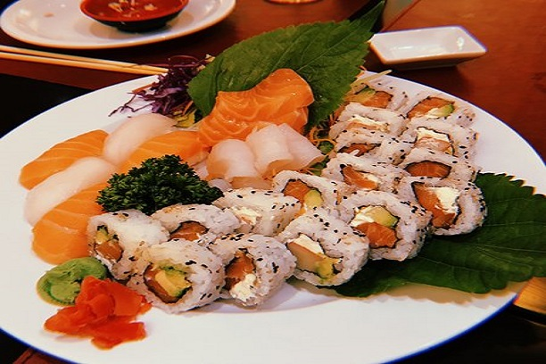

Fujisan

En Fujisan todo es calidad y autenticidad. Es nuestro lugar preferido en el Barrio Chino. El sushi es excelente. El wantan, ideal para entradas. Yakisoba solo con verduras o con camarones o cerdo, imperdible. El ceviche, impecable.